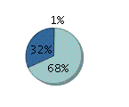

1
Blue
3
.com
Availability
EM Captured:
Dec 26, 2009 6:44:08 AM PST
Database Instance : orcl5.moi
Status
Up
Up Since
Nov 28, 2009 3:42:23 PM PST
Overall Availability
99.68%
Host
zareason.moi
Flash Recovery Area
/u2/app/oracle/flash_recovery_area
(70.0 GB)

Unused - 415.74 MB
Used (Reclaimable) - 47.5 GB
Used (Non-reclaimable) - 22.1 GB
History
About